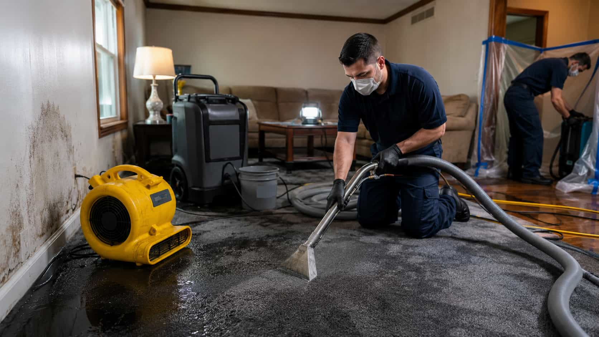
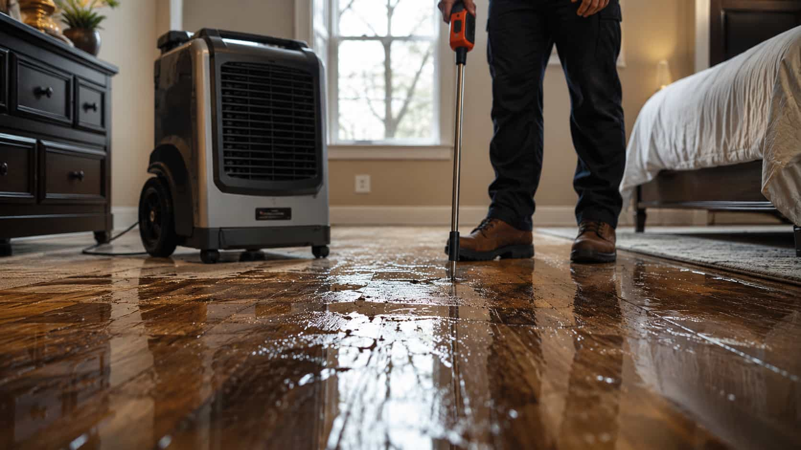

Problem path 01
Active water entry
Use this path when water appears to be entering or spreading from a ceiling, wall, appliance area, pipe area, or roof-adjacent location.
Problem path 01
Use this path when water appears to be entering or spreading from a ceiling, wall, appliance area, pipe area, or roof-adjacent location.
Problem path 02
Organize request details for rooms where standing water is visible, including kitchens, bathrooms, basements, utility rooms, or living spaces.
Problem path 03
Share details about damp smells, stains, humidity concerns, or moisture spots without relying on diagnostic or medical claims.
Quick service direction
Select a category to understand which request path may fit your water-damage situation. DryHouse Match helps you submit details and compare local provider options, not hire our own crew.
For water that is currently entering, spreading, or affecting ceilings, walls, appliances, or nearby surfaces.
Review this categoryFor floors or rooms where water is already present and request details need to be organized for possible provider options.
Review this categoryFor damp odors, stains, moisture spots, or humidity-related concerns. DryHouse Match does not diagnose mold or provide medical advice.
Review this categoryPopular request paths

Share the water-damage category, location, contact details, and a short description of what you are seeing.
Request details may help connect you with available participating providers suited to your general situation and location.
Review provider information, ask your own questions, and decide whether you want to continue with a provider.
Homeowner comparison clarity
DryHouse Match helps organize your request and may connect you with participating local providers. The platform does not perform the work, verify every provider claim, guarantee availability, or set final service terms.

Final clarity